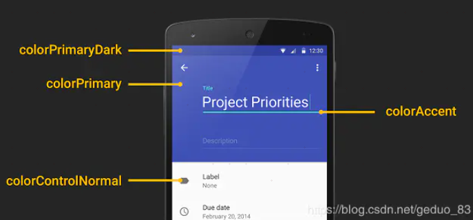
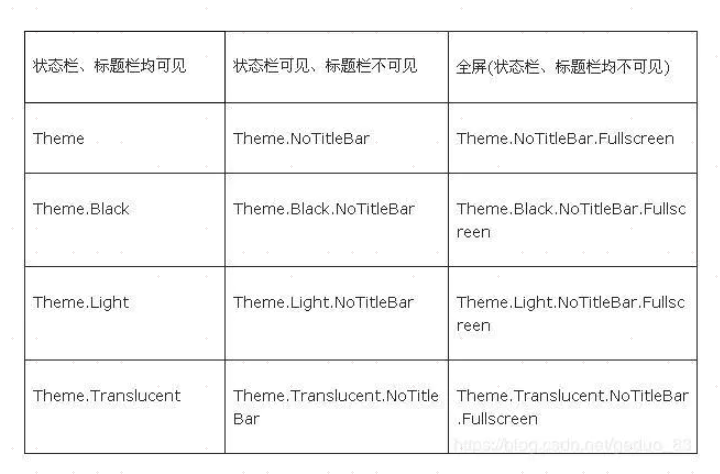

设置位置
AndroidManifest.xml中可以对application、activity添加android:theme属性设置主题
在src/res/values/themes.xml
在Activity的onCreate()中，在setContentView之前设置
protected void onCreate(Bundle savedInstanceState) {
super.onCreate(savedInstanceState);
setTheme(android.R.style.Theme_Light);
setContentView(R.layout.linear_layout_3);
}
作用域
application跟activity
- application中设置，这个就是全局的，如果你不再单独的重新为你要设置的activity设置一个主题，那么这个activity的主题就是“@style/AppTheme”这个主题
- activity中设置，可以看到MainActivity这个activity就被单独的设置了一个主题为：@style/AppTheme.mytheme
主题与风格的联系与区别
- style和theme:是一个包含一种 或者 多种格式化 属性 的集合 ,并且 style和theme都是资源,存放在res/values 文件夹下。
- style:View级别的,只能在某个Activity的布局文件中使用
- Theme:应用级别的,你必须在AndroidManifest.xml中的\
"或者\ 中使用
在定义Theme的时候@符号和?符号的区别
@符号表明我们引用的资源是前边定义过的(或者在前一个项目中或者在Android 框架中)。问号？表明 我们引用的资源的值在当前的主题当中定义过
AppTheme主题颜色
colorPrimary
App Bar 的背景色,即 ActionBar,通常也是一个 App 的主题色调。不过 ActionBar 已经退出历史舞台,由 Toolbar 代替使用,但是 Toolbar 需要在 layout 文件中单独使用 background 属性设置背景色,如:
<android.support.v7.widget.Toolbar
android:layout_width="match_parent"
android:layout_height="wrap_content"
android:background="?attr/colorPrimary" />
colorPrimaryDark
status bar(状态栏)背景色。仅作用于 Lollipop 及更高版本。
colorAccent
许多控件在选中状态或获取焦点状态下使用这个颜色,常见有:
- CheckBox:checked 状态
- RadioButton:checked 状态
- SwitchCompat:checked 状态
- EditText:获取焦点时的 underline 和 cursor 颜色
- TextInputLayout:悬浮 label 字体颜色
android:navigationBarColor
navigation bar 背景色。仅作用于 Lollipop 及更高版本。
colorControlNormal
某些 Views "normal" 状态下的颜色,常见如:unselected CheckBox 和 RadioButton,失去焦点时的 EditText,Toolbar 溢出按钮颜色,等等。
colorControlActivated
某种程度上,是 colorAccent 的替代者,比如对于 CheckBox 和 RadioButton 的 checked 状态,colorControlActivated 属性会覆盖 colorAccent 属性的对应颜色。
colorControlHighlight
所有可点击 Views 触摸状态下的 Ripple(涟漪)效果。仅作用于 Lollipop 及更高版本。
colorButtonNormal
Button normal 状态下的背景色。注意,这种设置与 Button 的 android:background 属性改变背景色不同的是,前者在 Lollipop 及更高版本上会让 Button 依旧保持阴影和 Ripple 触摸效果。
android:windowBackground
窗口背景色,诸如此类的还有:android:background,android:colorBackground 等。
android:textColorPrimary
EditText 的 text color,等等文本颜色。
navigationIcon
返回按钮的图片


常见的主题与风格
android:theme="@android:style/Theme.Dialog" 将一个Activity显示为能话框模式
android:theme="@android:style/Theme.NoTitleBar" 不显示应用程序标题栏
android:theme="@android:style/Theme.NoTitleBar.Fullscreen" 不显示应用程序标题栏,并全屏 android:theme="Theme.Light" 背景为白色
android:theme="Theme.Light.NoTitleBar" 白色背景并无标题栏
android:theme="Theme.Light.NoTitleBar.Fullscreen" 白色背景,无标题栏,全屏
android:theme="Theme.Black" 背景黑色
android:theme="Theme.Black.NoTitleBar" 黑色背景并无标题栏
android:theme="Theme.Black.NoTitleBar.Fullscreen" 黑色背景,无标题栏,全屏
android:theme="Theme.Wallpaper" 用系统桌面为应用程序背景
android:theme="Theme.Wallpaper.NoTitleBar" 用系统桌面为应用程序背景,且无标题栏
android:theme="Theme.Wallpaper.NoTitleBar.Fullscreen" 用系统桌面为应用程序背景,无标题栏,全屏 android:theme="Translucent" 半透明
android:theme="Theme.Translucent.NoTitleBar" 半透明、无标题栏
android:theme="Theme.Translucent.NoTitleBar.Fullscreen" 半透明、无标题栏、全屏
android:theme="Theme.Panel"
android:theme="Theme.Light.Panel"

AOSP中的主题列表
在以下连链接中查找：https://android.googlesource.com/platform/frameworks/base/+/refs/heads/master/core/res/res/values
themes.xml：Android 4.0 以前使用的默认主题
themes_holo.xml： Android 4.0 ~ Android 4.4 使用的默认主题
themes_materials.xml：Android 5.0 之后使用的默认主题
theme_device_defaults.xml：该文件的开头注释中写了如下文字，意思是，该文件中包含设备默认使用的主题，如果想修改系统默认主题，应该修改该文件，而不是 themes.xml 文件。